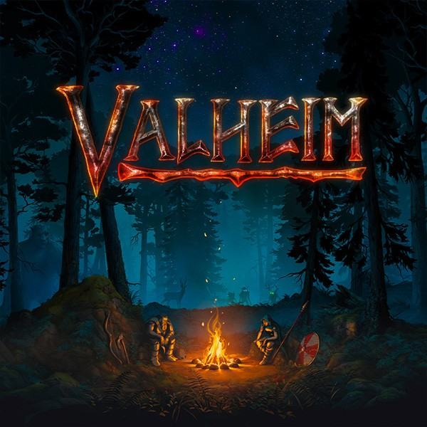

Olá chamo-me Sofia Martins, na secundaria frequentei um curso de informática, entrei num curso de gestão de empresas mas conclui que nnão era o que gostava e agora estou no curso de engenharia de sistemas e tecnologias informáticas.
A escolha de Valheim como meu jogo preferido é devido à forma como me consigo imergir no universo e explorar as suas muitas possibilidades.

Visitar o site oficial do jogo